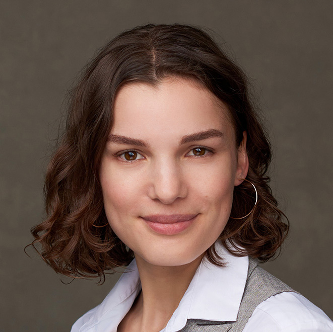

Dr Lucy Sabin (she/her)
My research focuses on environmental justice, using community-oriented and arts-based methods. Currently investigating the sensory and embodied dimensions of rewilding landscapes, my interests include ecological knowledge and experiences of weather and atmosphere. Ask me about interdisciplinary exchanges, communication design, and creative approaches in research.
Timeline
2025- Research Fellow, Digital Humanities Lab, University of Sussex.
I'm researching community experiences of wilder spaces using walking interviews, deep mapping, and co-creation. We are exploring how nature recovery shifts perceptions of self and place. This work is part of RURALEX, an EU-funded project on the changing dynamics of rural knowledges.
2024-25 Postdoc, Dept. of Ethics, Amsterdam UMC.
I spent a year exploring how scientists enact care for the environment in their everyday work-life. This involved interviews with experts but also making a zine, short film and podcast. I started the EcoFeministArtScience (EFAS) Collective, and co-edited Chemical Exposures: Toxicity in the Anthropocene (out soon with UCL Press).
2020-2024 PhD, Department of Geography, University College London.
For my doctorate, Aerography: air quality and creative practice, I investigated lived experiences of air pollution, with case studies spanning urban, agricultural, and coastal settings. Alongside academic papers, I produced a portfolio of creative work, including a solo exhibition at the University of Bern.
2020-21 Creative Associate (Digital), Modern Art Oxford.
Working with curators at MAO defined my approach to art and design as research. I led the community exhibition Breathworks, supported by The Oxford Research Centre in the Humanities, received a DYCP Award from Arts Council England, and featured on BBC R4. I also co-taught the MA in Graphic Design at Arts University Bournemouth.
2018-20 Master of Research (MRes), Communication Design, Royal College of Art.
My journey from web designer to researcher begins. I was teaching yoga at the time and often thinking about breath, so for my dissertation I researched ways of mapping air pollution. This involved interviewing artists and scientists, experimenting with art installations, and holding co-design workshops.
Want to know more?
You are welcome to contact me. Happy to chat about collaborations, commissions, events, or licensing my images for your next publication.